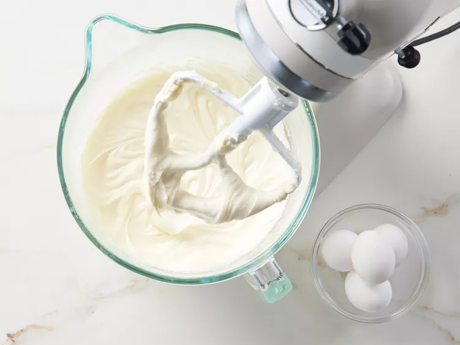

Lemon Meringur Cheesecake
This lemon meringue cheesecake is the best of both worlds if you love lemon meringue pie and cheesecake! It's great any time of the year and will surely impress your guests. I think it tastes even better the day after it's made, like most cheesecakes.
Ingredients
Crust:
- 2 cups shortbread cookie crumbs
- ¼ cup melted butter
Filling:
- 3 (8 ounce) packages cream cheese, softened
- 1 cup sour cream
- 1 cup white sugar
- 4 large eggs
- ¼ cup fresh lemon juice
- 1 medium lemon, zested
- 1 teaspoon vanilla extract
Meringue Topping:
- 4 large egg whites
- ¼ cup white sugar
- ¼ teaspoon cream of tartar (Optional)
- 1 ½ cups lemon curd
Steps
- Gather all ingredients. Preheat the oven to 325 degrees F (165 degrees C).
- To make the crust: Mix cookie crumbs and melted butter together in a bowl until evenly combined.
- Press into the bottom of a 9-inch springform pan.

- To make the filling: Beat cream cheese, sour cream, and sugar together in a bowl with an electric mixer until smooth and creamy.

- Add eggs, one at a time, beating well after each addition. Mix in lemon juice, lemon zest, and vanilla until smooth, scraping the bottom and sides of the bowl as needed.
- Spread mixture over crust in the springform pan.
- Bake in the preheated oven until edges are puffed and surface of cheesecake is firm except for a small spot in the center that will jiggle when the pan is gently shaken, about 1 hour.
- Let cool to room temperature, about 1 hour, then refrigerate until completely cooled, at least 3 to 4 hours.
- To make the meringue topping: Preheat the oven to 375 degrees F (190 degrees C). Beat egg whites in a bowl with an electric mixer until soft peaks form.
- Beat in sugar and cream of tartar until mixture is glossy and stiff peaks form.
- Spread lemon curd over chilled cheesecake.
- Mound whipped egg whites over top and spread until curd is completely covered.
- Bake in the preheated oven until meringue is golden brown, about 10 minutes.
- Remove from the oven and chill, uncovered, in the refrigerator for at least 1 hour or up to 1 day before serving. It's best not to cover the meringue or it may collapse.
Other recipes
- Lasagna
- Recipe Title 2
- Recipe Title 3
Home